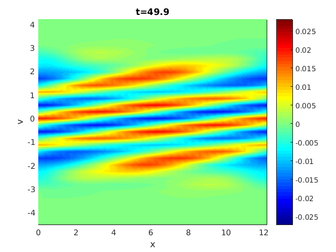
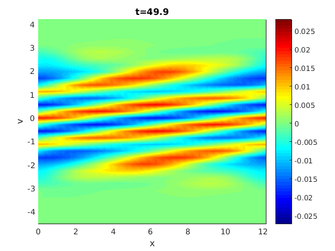

Spectral 2D Vlasov-Poisson Solver
Author: Jakob Ameres jakobameres.com
Contents
Features
- Spectral description of density
- Symplectic (for Vlasov-Poisson) Runge Kutta time integrator
Landau Damping parameters
eps=0.05; % Amplitude of perturbation, 0.05 for linear, 0.5 for nonlinear kx=0.5; % Wave vector L=2*pi/kx; % length of domain qm=-1; % negative charge to mass = electrons, $\frac{q}{m}=-1$ % Initial condition f0=@(x,v) (1+eps*cos(kx*x))./sqrt(2*pi).*exp(-0.5.*v.^2); % Background to be subtracted from the phase space plot background=@(x,v) 1./sqrt(2*pi).*exp(-0.5.*v.^2); % External electric field E_ext=@(x,t) 0.*x+0.*t; dt=0.1; % Time step tmax=50; rungekutta_order=3; %Order of the runge Kutta time integrator Nx=32; % Number of cells in spatial direction Nv=32; % Number of cells in velocity direciton vmax=4.5; vmin=-4.5;
Define phase space mesh
v=linspace(vmin,vmax,Nv+1).';v=v(1:end-1); x=linspace(0,L,Nx+1).';x=x(1:end-1); [XX,VV]=ndgrid(x,v);
Time integration scheme for symplectic runge kutta
switch rungekutta_order case 1 rksd=[1, 0]; %Symplectic Euler rksc=[0, 1]; case 2 rksd=[0.5, 0.5 ]; rksc=[0, 1]; case 3 rksd=[2/3, -2/3, 1 ]; rksc=[ 7/24, 3/4, -1/24]; case 4 rk4sx=real((2^(1/3) +2^(-1/3)-1)/6); rksd=[ 2*rk4sx +1 , -4*rk4sx-1, 2*rk4sx+1, 0]; rksc=[ rk4sx + 0.5 , -rk4sx, -rk4sx, rk4sx +0.5]; end %Build Matrix for spatial advection and all stages XSHIFT=zeros(Nx,Nv,length(rksd)); m=fftshift(((1:Nx)-Nx/2-1)); for jdx=1:length(rksd) XSHIFT(:,:,jdx)=exp((-1j*dt*rksd(jdx)*2*pi/L)*(v*m).'); end %Preallocate matrix for velocity advection VSHIFT=zeros(Nx,Nv); %diagnostic numt=ceil(tmax/dt); fieldenergy=zeros(numt,1); kineticenergy=zeros(numt,1); sh_entropy=zeros(numt,1); %Shannon entropy kl_entropy=zeros(numt,1); %Kullback-Leibler entropy EE=zeros(Nx,numt); % Set initial condition f=f0(XX,VV);
Fourier transform in x
f=fft(f,[],1); figure('Name', 'Phase Space Density', 'Numbertitle','off'); for tdx=1:numt
Loop over all stages of the symplectic Runge Kutta
for sdx=1:length(rksd)
Poisson equation
rho=sum(f,2)*(vmax-vmin)/Nv; %rho(x) -> integrate over v rho(1)=0; %remove (ion) background E=rho./(-1j*(2*pi/L)*fftshift(((1:Nx)-Nx/2-1).')); % remove constant fourier mode E(1)=0; if (sdx==length(rksd)) fieldenergy(tdx)=sum(E'*E)/2; %L2 norm of Electric field EE(:,tdx)=E; end E=ifft(E,'symmetric'); E=E+E_ext(x,tdx*dt); %plot(x,ifft(E,'symmetric'));
Advection in v
f=ifft(f,[],1,'symmetric'); %back transform % f is fully backtransformed, calculate diagnostics if (sdx==length(rksd)) kineticenergy(tdx)=sum(f,1)*v.^2*(vmax-vmin)/Nv; sh_entropy(tdx)=sum(sum(f.*log(abs(f))))*L/Nx*(vmax-vmin)/Nv; kl_entropy(tdx)=sum(sum(f.*log(abs(f./f0(XX,VV)))))... *L/Nx*(vmax-vmin)/Nv; end % Fourier transform in v f=fft(f,[],2); % Build Matrix for spatial advection m=fftshift((1:Nv) -Nv/2-1); VSHIFT=exp((1j*dt*rksc(sdx)*2*pi/(vmax-vmin))*E*m); f=f.*VSHIFT; f=ifft(f,[],2,'symmetric');
Advection in x
f=fft(f,[],1);
f=f.*XSHIFT(:,:,sdx);
end
Visualize phase space
if (mod(tdx,20)==0) pcolor(XX,VV,ifft(f,[],1,'symmetric')-background(XX,VV)); shading interp; colormap jet; colorbar; hold on; title(sprintf('t=%g', (tdx-1)*dt)); xlabel('x');ylabel('v'); drawnow; end

 
 end f=ifft(f,[],1,'symmetric');
Discussion
time=(0:numt-1)*dt; figure('Name','Electrostatic Energy','Numbertitle','off'); semilogy(time, fieldenergy); xlabel('time'); grid on; ylabel('electrostatic energy'); % Include decay rate for linear landau damping WITHOUT COLLISIONS if (eps<0.1 && kx==0.5) hold on; % Obtain zero of dispersion relation with dispersion_landau.m omega=1.415661888604536 - 0.153359466909605i; plot(time,0.5*fieldenergy(1)*abs(exp(-1j*omega*(time-0.4))).^2); % linear analysis with frequency plot(time,0.5*fieldenergy(1)*real(exp(-1j*omega*(time-0.4))).^2); legend('numerical', 'linear analysis', 'linear analysis'); hold off; end figure('Name','Kinetic Energy','Numbertitle','off'); semilogy(time, kineticenergy); xlabel('time'); grid on; ylabel('kinetic energy'); %Kullback-Leibler-Entropy relative to initial condition figure('Name','Kullback-Leibler-Entropy','Numbertitle','off'); plot(time,kl_entropy) xlabel('time'); grid on; ylabel('entropy'); title('Kullback-Leibler-Entropy relative to f(t=0)'); %Shannon-Entropy figure('Name','Shannon-Entropy of f','Numbertitle','off'); plot(time,sh_entropy) xlabel('time'); grid on; ylabel('entropy of f'); title('Shannon-Entropy of f');